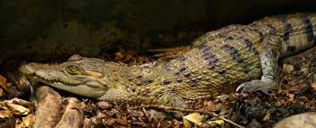

Cocodrilo filipino
 El cocodrilo filipino es una especie endémica de Filipinas que posee un un hocico relativamente ancho. Este animal en peligro de extinción sólo se encuentra en ríos y zonas pantanosas. Su aspecto es tan similar al cocodrilo de Nueva Guinea que durante años se les consideró a ambos como una única especie.
Amenazas
Sus principales amenazas son la pérdida de hábitat y su caza por ser vistos como un peligro para las poblaciones y sus animales domésticos.